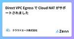
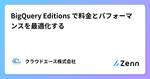

クラウドエース株式会社さんのフィード
https://zenn.dev/cloud_ace
クラウドエース株式会社 公式技術ブログです
フィード

Container Registry 廃止に備えて公式の移行ツールを紹介します 1
1
クラウドエース株式会社さんのフィード
こんにちは。クラウドエース SRE 部の阿部です。このブログ記事では、 Container Registry を Artifact Registry に自動移行するツールを紹介したいと思います。 はじめに以前、下記の記事で Container Registry の廃止について説明しました。これは 2023 年 5 月の記事で、かなり前に執筆した記事です。https://zenn.dev/cloud_ace/articles/6c401ce3b3bcccその後、2024 年 3 月 18 日のリリースノートで正式に Container Registry の停止が告知されました。...
2日前

Direct VPC Egress で Cloud NAT がサポートされました
クラウドエース株式会社さんのフィード
はじめにこんにちは、クラウドエース SRE部 に所属している\textcolor{red}{赤髪}がトレードマークの Shanks です。以前から記事発信している「Direct VPC Egress」で、Cloud NAT がついにサポートされました。本記事では、この機能を利用するメリットやサンプル アーキテクチャをご紹介いたします。Direct VPC Egress については既にわかりやすい解説記事を弊社から発信していますのでご参照ください。 Serverless 製品の特性をおさらいGoogle Cloud は Cloud Run 等の Serverless...
12日前

BigQuery Editions で料金とパフォーマンスを最適化する
クラウドエース株式会社さんのフィード
はじめにこんにちは、クラウドエース データソリューション部の坂田です。みなさんの BigQuery ライフはいかがですか？今回は、BigQuery Editions における料金とパフォーマンスの最適化についてお話しします。 説明することBigQuery Editions を使い始めてしばらく経った際の料金とパフォーマンスの最適化方法 説明しないことBigQuery Editions を使い始める際の最適な設定他の料金体系「オンデマンド」での最適化スロットに関する設定以外の最適化 BigQuery Editions とはBigQuery Editi...
13日前

Google Cloud Partner Tech Blog Challenge 2023 を受賞しました
クラウドエース株式会社さんのフィード
Google Cloud Partner Tech Blog Challenge 2023 を受賞しましたこんにちは、クラウドエース SRE部 に所属している\textcolor{red}{赤髪}がトレードマークの Shanks です。この度、弊社クラウドエース株式会社と、同じグループ会社である吉積情報株式会社から、それぞれ Google Cloud Partner Tech Blog Challenge 2023 の受賞者を輩出しました。私も Cross-Cloud Interconnect の紹介記事で表彰されました。本日はその発表と、筆者の執筆活動のマインドについて共有...
14日前
バックエンドエンジニアリング部の新卒向け研修に取り組んだ話
クラウドエース株式会社さんのフィード
はじめにこんにちは、クラウドエース バックエンドエンジニアリング部の野村です。この記事では、バックエンドエンジニアリング部で新卒向けの研修として行われたアプリケーション構築課題を開発経験がほぼない私が実施したときの感想や何を学んだかを一つの記事にします。 アプリケーション構築課題とは?私たちが新卒社員向けの研修課題として取り組んだのは、特定の要件を満たす ToDo アプリケーションの開発でした。この課題では、設計の段階から実装までを一貫して行い、実際の開発フローを体験しました。なお、今回の開発スコープはバックエンドのみで、フロントエンドの開発は含まれていません。 必要な...
14日前
Minecraft サーバー用の VM の選び方
クラウドエース株式会社さんのフィード
クラウドエースバックエンドエンジニアリング部の滝本です。本記事では Google Cloud で Minecraft サーバーを立てる際に、どのような考え方でスペックを選ぶのか、また現時点で存在するマシンタイプからおすすめの VM を紹介します。 おすすめのマシンタイプ「今すぐサーバー立てて友達と遊びたいんじゃ！！」という忙しい方向けに、まずいくつかおすすめのマシンタイプを紹介します。Machine typevCPURAMCPU Model / Base - Boost Freq.Commentn2d-highcpu-444GBAMD EPYC 7...
14日前
VLAN アタッチメント 設計完全ガイド
クラウドエース株式会社さんのフィード
はじめに 記事の目的こんにちは、クラウドエース SRE部 に所属している\textcolor{red}{赤髪}がトレードマークの Shanks です。僕は Security&Networking カテゴリで Google Cloud Partner Top Engineer をいただけたこともあり、社内外からネットワークに関する幅広い相談を受ける機会が増えています。https://youtu.be/cKaryf7qp9wその中でも、システム要件として「大容量通信が発生するため広帯域を確保したい」というケースがあります。通常は Cloud Interconnect...
16日前
Cloud Router 設計完全ガイド
クラウドエース株式会社さんのフィード
はじめに 記事の目的こんにちは、クラウドエース SRE部 に所属している\textcolor{red}{赤髪}がトレードマークの Shanks です。僕は Security&Networking カテゴリで Google Cloud Partner Top Engineer をいただけたこともあり、社内からネットワークに関する幅広い相談を受ける機会が増えています。その中でも、Cloud Router の設計・構築でアドバイスを求められることがあります。システム要件によって、Cloud Interconnect・Cloud VPN・Cloud NAT を採用するケー...
16日前
Cloud Inteconnect 帯域拡張 完全ガイド
クラウドエース株式会社さんのフィード
はじめに 記事の目的こんにちは、クラウドエース SRE部 に所属している\textcolor{red}{赤髪}がトレードマークの Shanks です。僕は Security&Networking カテゴリで Google Cloud Partner Top Engineer をいただけたこともあり、社内外からネットワークに関する幅広い相談を受ける機会が増えています。https://youtu.be/cKaryf7qp9wその中でも、「構築時よりもトラフィックが増加しているため既存で利用している Cloud Interconnect の回線容量を安全に拡張したい」と...
16日前
Cloud Interconnect 設計完全ガイド
クラウドエース株式会社さんのフィード
はじめに 記事の目的こんにちは、クラウドエース SRE部 に所属している\textcolor{red}{赤髪}がトレードマークの Shanks です。僕は Security&Networking カテゴリで Google Cloud Partner Top Engineer をいただけたこともあり、社内外からネットワークに関する幅広い相談を受ける機会が増えています。https://youtu.be/cKaryf7qp9wその中でも、システム要件として「大容量通信が発生するため広帯域を確保したい」というケースがあります。通常は Cloud Interconnect...
16日前
Vertex AI の LLM 自動評価ツール AutoSxS(automatic side-by-side) 使ってみた！
クラウドエース株式会社さんのフィード
1. はじめにこんにちは、クラウドエース データソリューション部所属の泉澤です。クラウドエースの IT エンジニアリングを担うシステム統括部の中で、特にデータ基盤構築・分析基盤構築からデータ分析までを含む一貫したデータ課題の解決を専門とするのがデータソリューション部です。データソリューション部では活動の一環として、毎週 Google Cloud の新規リリースを調査・発表し、データ領域のプロダクトのキャッチアップをしています。その中でも重要と考えるリリースを本ページ含め記事として公開しています。今回紹介するリリースは、Vertex AI に AutoSxS (automati...
19日前
【Dialogflow】新機能 カスタム要約プロンプトとは？
クラウドエース株式会社さんのフィード
はじめにこんにちは、クラウドエース データソリューション部所属の ジェスター です。データソリューション部 では、Google Cloud が提供しているデータ領域のプロダクトについて、新規リリースをキャッチアップするための調査報告会を毎週実施しています。 新規リリースの中でも、特に重要と考えるリリースを記事としてまとめ、本ページのように公開しています。今回は 2024 年 01 月 24 日付のリリース、「Dialogflow のデータストア エージェントにカスタム要約プロンプトを与えることが可能になったこと」についてご紹介します。実際のリリースノートについては下記をご確認...
21日前
Cloud Build と Cloud Source Repositories を連携させる方法と課題点
クラウドエース株式会社さんのフィード
こんにちは、クラウドエース SRE の荒木です。Cloud Build と Cloud Source Repositories（以下 CSR） の連携について、方法や気になった点を備忘録的にご紹介します。 GitHub が使えない案件最近担当した案件では、セキュリティ要件のため、GitHub リポジトリをソースコードの保管場所として利用することができませんでした。この場合いくつかの解決策が考えられますが、今回は以下の考慮すべき点があったため、CSR を利用することにしました。開発終了後のソースコードの改修作業は基本的に想定していない新たにGitLabなどのバージョン管理シ...
21日前
BigQuery ML 関数のご紹介
クラウドエース株式会社さんのフィード
はじめにこんにちは、クラウドエース データソリューション部の穂戸田です。クラウドエース データソリューション部 についてクラウドエースのITエンジニアリングを担う システム開発統括部 の中で、特にデータ基盤構築・分析基盤構築からデータ分析までを含む一貫したデータ課題の解決を専門とするのが データソリューション部 です。弊社では、新たに仲間に加わってくださる方を募集しています。もし、ご興味があれば エントリー をお待ちしております！本記事では、BigQuery ML 関数を一部ご紹介し、SQL のみで画像からのテキスト抽出や言語翻訳、テキスト解析などを行ってみたいと思います...
24日前
BigQuery における、ベクトル検索とベクトルインデックス機能
クラウドエース株式会社さんのフィード
はじめにこんにちは。クラウドエース データソリューション部所属の 髙根 です。クラウドエースの データソリューション部 では、IT エンジニアリングを担うシステム開発部の中で、特にデータ基盤構築・分析基盤構築からデータ分析までを含む一貫したデータ課題の解決を専門としています。データソリューション部の活動の一環として、Google Cloud が提供しているデータ領域のプロダクトについて、新規リリースをキャッチアップするための調査報告会を毎週実施しています。新規リリースの中で、特に重要と考えるリリースを本ページ含め記事として公開しています。今回ご紹介する内容は、2024年 1...
1ヶ月前
BigQuery MLにおいてML.TRANSFORM関数を活用し、前処理されたデータを確認しよう！
クラウドエース株式会社さんのフィード
はじめにこんにちは、クラウドエースデータソリューション部所属のヒッキーです。クラウドエースの IT エンジニアリングを担うシステム開発部の中で、特にデータ基盤構築・分析基盤構築からデータ分析までを含む一貫したデータ課題の解決を専門とするのがデータソリューション部です。データソリューション部では活動の一環として、毎週 Google Cloud (旧 Google Cloud Platform、以下「GCP」) の新規リリースを調査・発表し、データ領域のプロダクトのキャッチアップをしています。その中でも重要と考えるリリースを本ページ含め記事として公開しています。今回ご紹介するリリー...
1ヶ月前
「ランニングコストゼロ」で稼働する Web アプリケーションの技術構成
クラウドエース株式会社さんのフィード
はじめにこんにちは。クラウドエース株式会社で主にアプリケーション開発を担当している水野です。今回は、「ランニングコストゼロ」で稼働するWeb アプリケーションの技術構成についてご紹介します。プロダクト開発をする時に「マネタイズできるまでは費用を抑えたい」や「最小限のコストで長期的に運営したい」などのケースがあると思います。そういう方にとって参考になる記事となっています。また、基本的に Google Cloud を使用します。理由は私が Google Cloud 好きだからです。あと、以下の3点を満たしていることも理由のひとつです。永久無料枠が豊富拡張性が高い（小規...
1ヶ月前
【GCP 初心者むけ🔰】クラウド破産から身を守れ！今すぐできる予防策 3 選！
クラウドエース株式会社さんのフィード
!本記事は、Google Cloud（旧 Google Cloud Platform、以下「GCP」）を使い始めたばかりの初心者を対象にしています。こんにちは、クラウドエース データソリューション部の松山です。クラウドエース データソリューション部とは？クラウドエースのITエンジニアリングを担う システム開発統括部 の中で、特にデータ基盤構築・分析基盤構築からデータ分析までを含む一貫したデータ課題の解決を専門とするのが データソリューション部 です。弊社では、新たに仲間に加わってくださる方を募集しています。もし、ご興味があれば エントリー をお待ちしております！ 1....
1ヶ月前
BigQuery Subscription のスキーマ設定
クラウドエース株式会社さんのフィード
1. はじめにこんにちは、クラウドエース データソリューション部所属の泉澤です。クラウドエースのITエンジニアリングを担うシステム統括部の中で、特にデータ基盤構築・分析基盤構築からデータ分析までを含む一貫したデータ課題の解決を専門とするのがデータソリューション部です。データソリューション部では活動の一環として、毎週 Google Cloud の新規リリースを調査・発表し、データ領域のプロダクトのキャッチアップをしています。その中でも重要と考えるリリースを本ページ含め記事として公開しています。今回紹介するリリースは、Pub/Sub の BigQuery Subscription...
1ヶ月前
どのレイヤー（層）でトランザクションを実装すべきか
クラウドエース株式会社さんのフィード
はじめにこんにちは。クラウドエース株式会社で主にアプリケーション開発を担当している水野です。今回は、どのレイヤー（層）でトランザクション実装すべきかについてご紹介します。結論から言うと、usecase 層と infrastructure 層で実装します。各層で実装することは以下です。実装内容は抽象化（カプセル化）させ、他の層では意識させないような構成にします。層実装内容usecaseどの処理に対して整合性を保つかと処理をどの順番で実施するかinfrastructureDB 固有のトランザクション操作（コミットやロールバック等）とトランザクションの...
1ヶ月前